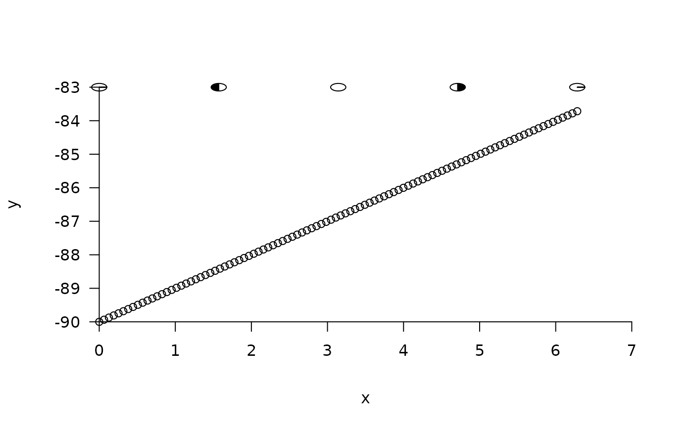

This function adds images of the lunar phase to lunar phase plots.
add_moons(
side = 1L,
pos = 0,
outer = TRUE,
nv = 100,
radius = 0.25,
units = "radians",
...
)A numeric input that defines the side on to which you would like to add the moons. side = 1, side = 2, side = 3, side = 4 add moons to the bottom, left, top and right axes respectively. The default is to add moons to the top of the plot. This is appropriate if the plot in question is a smooth of lunar phase. If the plot is a lunar phase time series, side = 2 is more appropriate (see Examples).
A numeric input that defines the position at which moons will be added to the plot. If side = 1 or side = 3, this refers to the height at which moons will be added. If side = 2 or side = 4, this refers to the x value at which moons will be added (see Examples). This should be a single number; i.e. moons are all plotted at the same height (in the case of a smooth plot) or distance along the x axis (in the case of a time series plot).
A logical input that defines whether or not the moons will be drawn beyond the range of the x or y axis. If this is the case, outer = TRUE; otherwise, set outer = FALSE.
A numeric input that defines the number of vertices that are used to define moon shapes.
A numeric input that defines the radii of the moons added in user units. The default is 0.25.
A character which defines the units of lunar phase on the existing plot. The default is "radians". "degrees" is the other option.
Additional arguments: none are currently implemented but depreciated argument names ('radius1' and 'position') can be passed via ....
Small subplots of the lunar phase (new moon, first quarter, full moon, third quarter, full moon) are added to an existing plot.
This function requires the 'lunar' and 'plotrix' packages. Please install these before running this function, using: install.packages(c("lunar", "plotrix").
#### Example (1): Add plots of lunar phase to simulated smooth function:
x <- seq(0, 2*pi, length.out = 100)
y <- (x - 10^2) + 10
axis_ls <- pretty_plot(x, y)
add_moons(side = 3,
pos = axis_ls[[2]]$lim[2],
outer = FALSE,
nv = 100,
radius = 0.1,
units = "radians")

#### Example (2): Add plots to a lunar phase time series
x <- seq.POSIXt(as.POSIXct("2016-01-01"), as.POSIXct("2016-05-01"), "days")
y <- lunar::lunar.phase(x)
axis_ls <- pretty_plot(x, y, type = "l")
#> Warning: Argument 'x[[1]]' time zone currently ''; tz forced to UTC.
add_moons(side = 2,
pos = axis_ls[[1]]$lim[1],
outer = TRUE,
nv = 100,
radius = 1e5,
units = "radians")